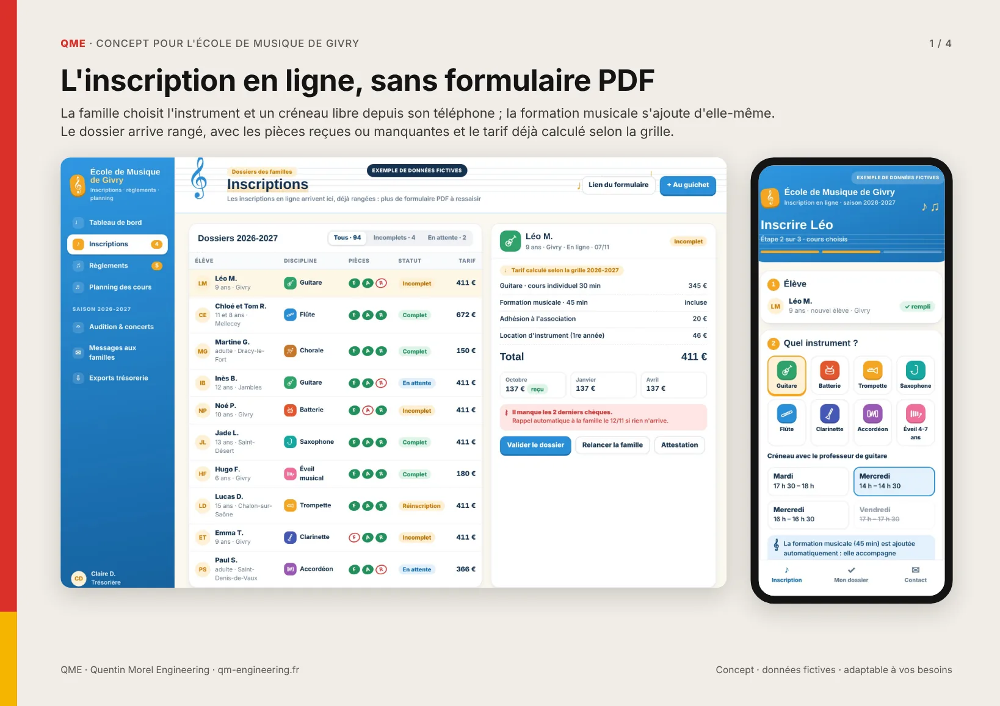
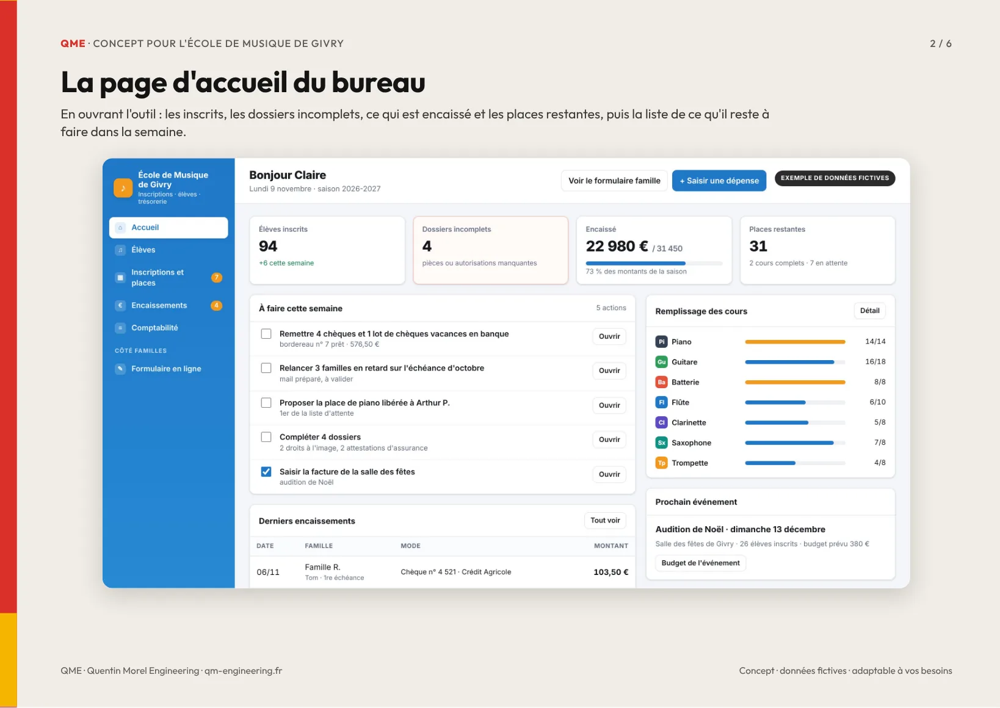
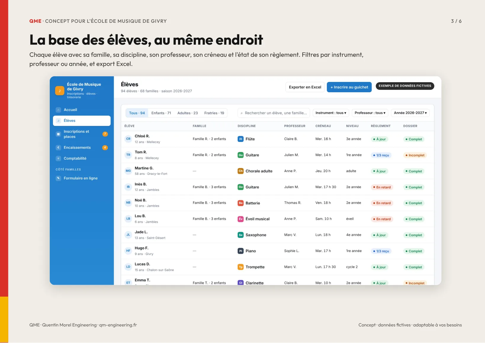
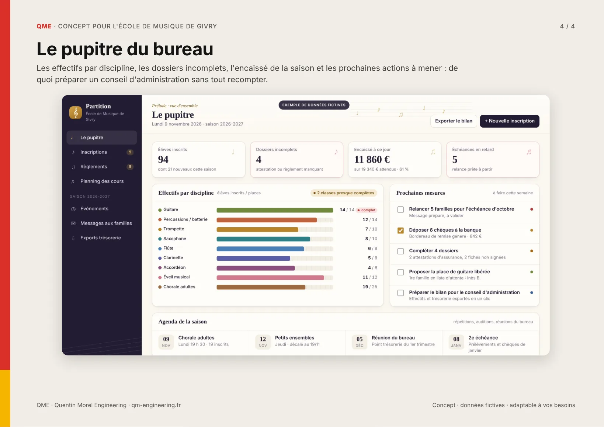
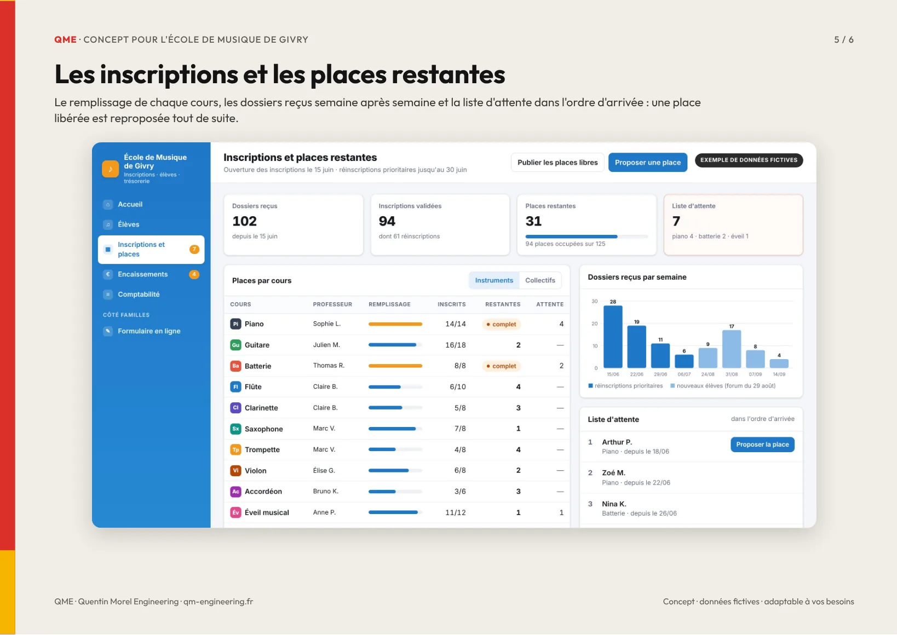
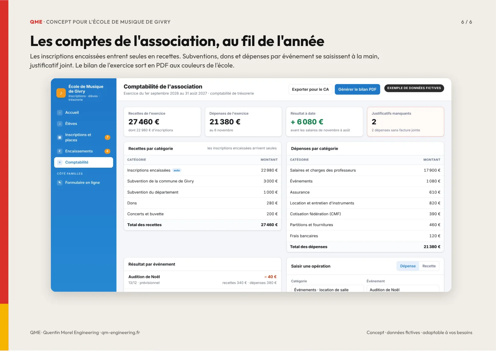

QME · Proposition du 9 novembre 2026
Votre proposition commerciale et votre devis
Concept pour l'École de Musique de Givry
Un outil pensé pour une école de musique associative tenue par des bénévoles : les familles s'inscrivent en ligne et la fratrie est reconnue, le bureau retrouve chaque élève et chaque règlement, les places restantes se voient d'un coup d'œil, et la trésorerie tient les comptes de l'association jusqu'au bilan de l'assemblée générale. Toutes les données sont fictives. Tout peut être adapté à votre façon de travailler et construit par modules.






QME · Gain attendu
Ce que l'outil rend à l'école
Le temps gagné
- Saisie et vérification des inscriptions, fratries comprises : environ 30 h par an
- Pointage des règlements et relances des familles : environ 23 h
- Comptes et bilan de l'assemblée générale : environ 15 h
- Places, liste d'attente et information des familles : environ 7 h
- Chiffres pour le bureau et le conseil d'administration : environ 5 h
Ce qui devient fiable
- Le tarif de chaque famille est calculé selon la grille, réduction fratrie comprise
- Chaque règlement est suivi jusqu'à l'encaissement, avec sa référence de chèque ou de virement
- Les recettes d'inscription entrent dans les comptes dès leur encaissement, sans ressaisie
- Les places restantes sont à jour : une place libérée est reproposée tout de suite
- Le bilan de l'exercice est prêt pour l'assemblée générale, et le dossier se transmet au prochain bureau
Ordres de grandeur détaillés dans la proposition commerciale, à affiner ensemble avec vos vrais volumes. La valorisation mesure le temps rendu aux bénévoles : ce n'est pas une dépense économisée.